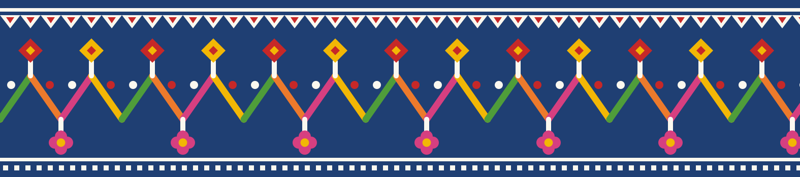
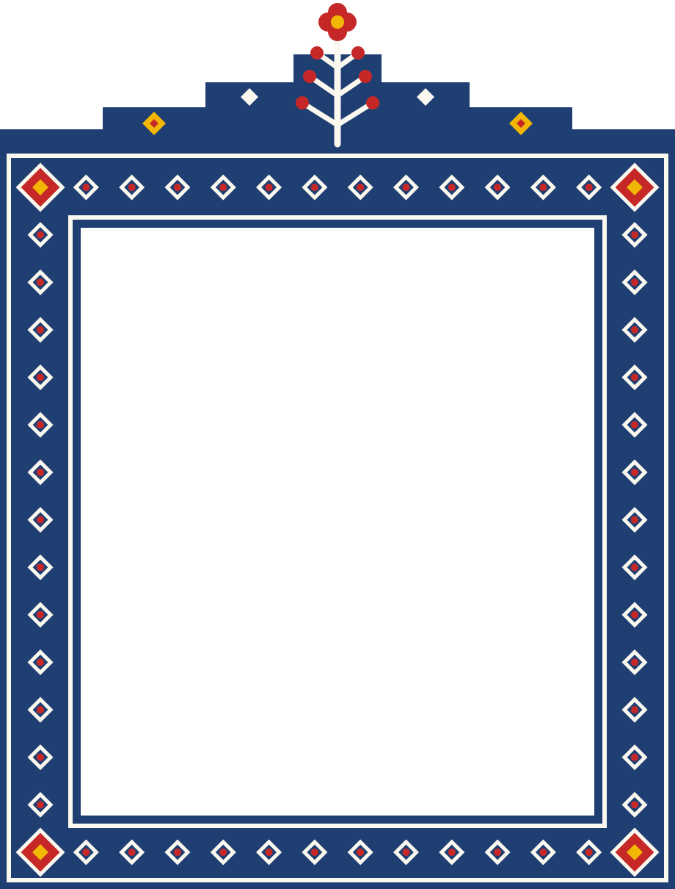
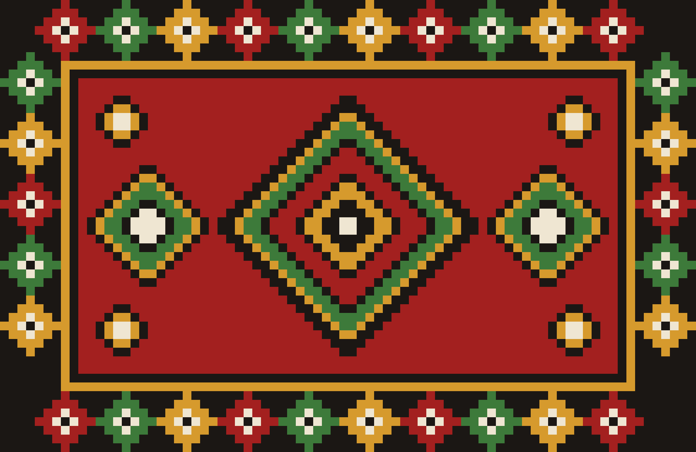
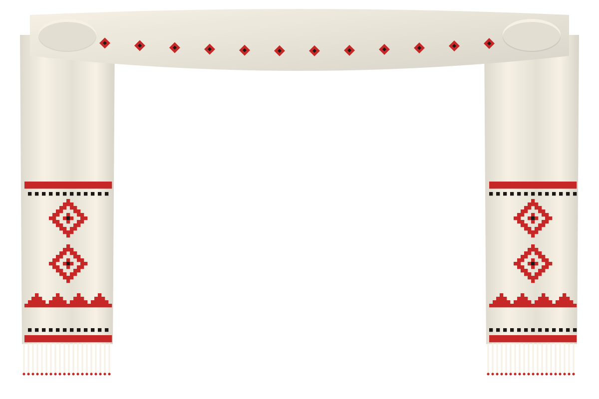
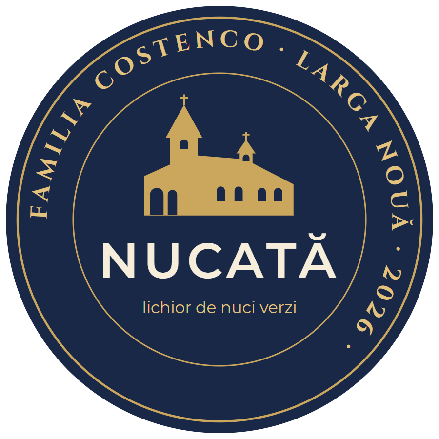
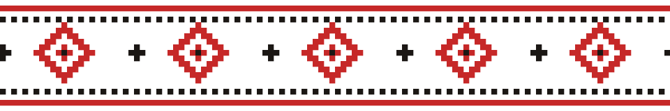
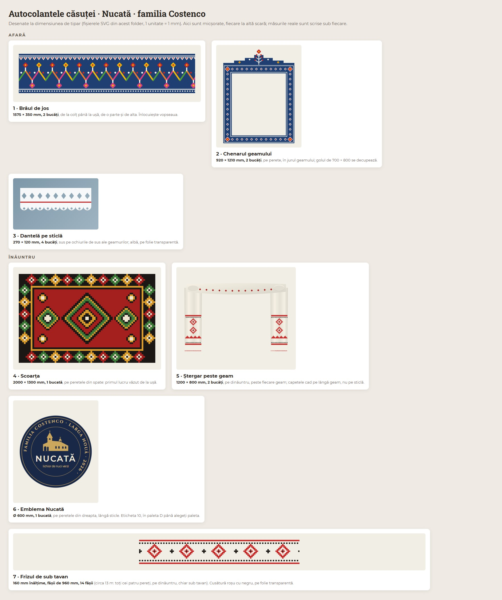

Autocolantele căsuței · Nucată · familia Costenco
Pentru serbarea de toamnă din Larga Nouă. Căsuța e o bojdeucă albă, acoperită cu stuf, de 4 × 3 m, cu ușa la mijloc și două geamuri. Pentru aprobare: desenele, măsurile și câte bucăți trebuie tipărite.
Afară

1 · Brâul de jos
1575 × 350 mm, 2 bucăți, de la colțul casei până la ușă, de o parte și de alta. Ține locul vopselei.
Fișierul de tipar (SVG)

2 · Chenarul geamului
920 × 1210 mm, 2 bucăți, pe perete, în jurul fiecărui geam. Golul de 700 × 800 mm din mijloc se decupează.
Fișierul de tipar (SVG)
3 · Dantelă pe sticlă
270 × 120 mm, 4 bucăți, sus pe ochiurile de sus ale geamurilor. Albă, pe folie transparentă.
Fișierul de tipar (SVG)
Înăuntru

4 · Scoarța
2000 × 1300 mm, 1 bucată, pe peretele din spate: primul lucru pe care îl vezi când intri.
Fișierul de tipar (SVG)

5 · Ștergar peste geam
1200 × 800 mm, 2 bucăți, pe dinăuntru, deasupra fiecărui geam. Capetele cad pe lângă geam, nu pe sticlă.
Fișierul de tipar (SVG)

6 · Emblema Nucată
Ø 600 mm, 1 bucată, pe peretele din dreapta, lângă sticle. Același desen ca eticheta sticlei.
Fișierul de tipar (SVG)

7 · Frizul de sub tavan
160 mm înălțime, fâșii de 960 mm, 14 fâșii (circa 13 m, pe toți cei patru pereți, pe dinăuntru, chiar sub tavan). Roșu cu negru, pe folie transparentă. Fâșiile se lipesc cap la cap; crucea de la capete se completează.
Fișierul de tipar (SVG)
Toate pe o singură planșă
